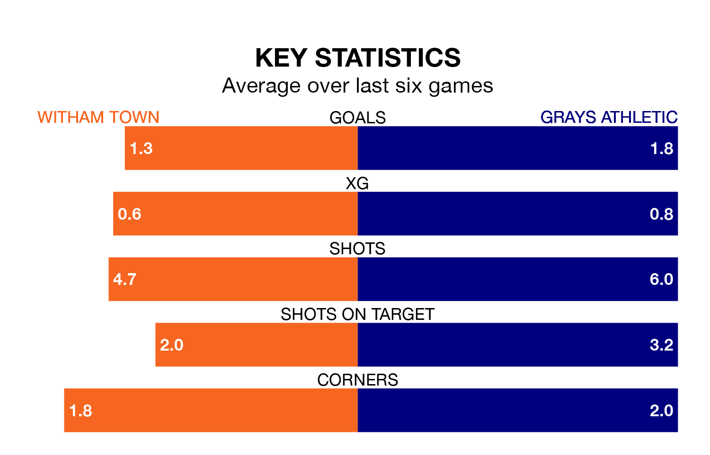

Witham Town host Grays Athletic on Saturday at the Village Glass Stadium in the Isthmian League Division One North.
In their last league match, on February 3, Witham lost to Basildon United 4-0 away.
Grays also lost, 3-2 away at New Salamis on February 9.
Grays are 18th in the table after 23 games, of which they have won four and drawn six, earning 18 points.
Witham are four places ahead of Athletic in 14th, with six wins and six draws putting them on 24 points.
In the last 10 years, Witham and Grays have played each other on eight occasions. Witham won two of them, Grays four, and they drew twice.
On average, Witham scored 1.1 goals and Grays 2.5 in those matches.
Their last meeting was on January 30, when Grays won 3-1 at home.
Town are in disappointing form in the Isthmian League Division One North, with two wins and four losses from their last six games.
With two wins and a draw over that period, the visitors' form is slightly better – they have taken seven points from 18, compared to the home side's six.
With 30 goals in 23 games so far this season, Grays are scoring at below the league average rate with 1.3 goals per game. And they are conceding more than average, letting in 44 goals at a rate of 1.9 per game.
Witham are also below average scorers, with 1.3 goals per game, compared to a league average of 1.7. They have conceded 1.9 goals per game.
Updated: 15:40 (UTC), 18/04/24